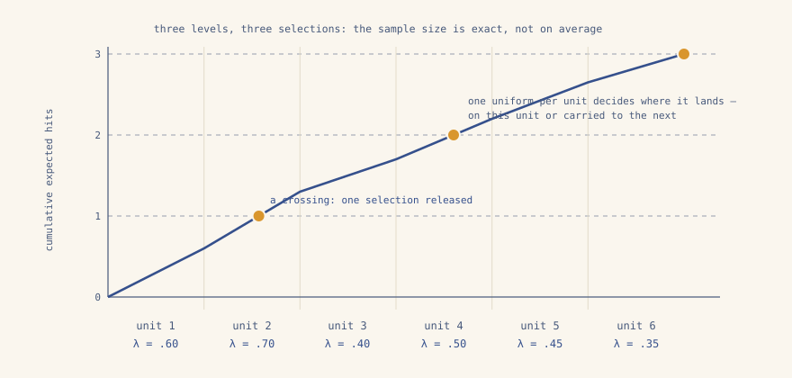

pps · sequencial · tamanho de amostra exato
pychromy sorteia
amostras com probabilidade proporcional ao tamanho pelo método sequencial de
Chromy (1979) — o procedimento do PROC
SURVEYSELECT METHOD=PPS_SEQ — com as seleções de cada unidade a menos
de um da sua expectativa e o tamanho da amostra sempre exato. Listas entram,
listas saem: nada para instalar além da wheel, pandas opcional por
construção. O motor é o crate Rust sem dependências
chromy-core,
compartilhado com o pacote R.
import pychromy
s = pychromy.sample(
size=alunos, n=40,
keys=[regiao, alunos], # ordem serpentina: região, depois tamanho
seed=20261022,
)
sum(s["hits"]) 40 # sempre: exato, não esperado
y = [[resultado[u] for u in s["unit"]]]
pychromy.estimate_total(y, s["position"],
s["expected_hits"], s["hits"])
{"total": [37623.4], "se": [5010.2], "random_draws": 38}Os pesos são 1 / expected_hits, já na amostra — prontos para qualquer análise baseada no desenho.
o que roda por baixo
Os hits esperados se acumulam ao longo da lista ordenada; cada vez que a soma corrente cruza um inteiro, uma seleção é liberada, e um único uniforme por unidade decide onde ela cai. Os hits de cada unidade saem o piso ou o teto da sua expectativa — nunca mais longe — que é o que significa reposição mínima de probabilidade.

a api
| função | o que faz |
| sample(size, n, keys=, seed=) | um desenho completo: tamanho → hits esperados → ordem → cabeça → seleção → pesos |
| serpentine_order(keys, method=) | ordem serpentina hierárquica ou aninhada; chaves de texto ordenam por bytes |
| mpps_size(columns, n_j=) | a medida de tamanho maximal sobre várias variáveis auxiliares |
| eqcv_allocation(columns, n, …) | os fatores que igualam os CVs antecipados entre as variáveis |
| expected_hits(size, n, min_replacement=) | tamanhos em hits esperados; certezas resolvidas, ou hits acima de um permitidos |
| select(lam, order=, head=, seed=…) | o procedimento completo com cada sorteio sob o seu controle |
| pmr(lam, uniforms, priority=) | a seleção sequencial em si, determinística dados os uniformes |
| estimate_total(y, positions, expected, hits) | o estimador de multiplicidade com variância de diferenças sucessivas |
Matrizes são listas de colunas: quem usa pandas escreve
[df[c].tolist() for c in cols],
quem usa listas puras as escreve diretamente. Toda recusa é ruidosa — hits
esperados que não somam um inteiro são recusados, nunca reescalados, porque
uma seleção cujas probabilidades de inclusão ninguém conhece não estima nada.
aleatoriedade, dita com clareza
O motor recebe os uniformes como argumentos, e uma seleção é uma função
pura das suas entradas. sample(seed=…)
os sorteia de um gerador fixo e documentado (SplitMix64): um desenho
publicado pode nomear a sua semente e ser reproduzido, por qualquer um,
anos depois.
R e Python reproduzem a si mesmos, não um ao outro — cada linguagem consome o próprio gerador — mas ambos rodam a mesma aritmética, fixada bit a bit a uma implementação de referência pelas fixtures-ouro que os três pacotes compartilham.
import numpy as np
rng = np.random.default_rng(2026)
lam = pychromy.expected_hits(size, 40)
s = pychromy.select(
lam,
u_head=rng.uniform(),
uniforms=rng.uniform(size=len(lam)).tolist(),
)
# o motor nunca sorteia: você sorteouinstalar
pip install pychromypip install maturin
maturin develop --release
Uma wheel abi3 por plataforma serve todo Python a partir do 3.9. O nome é
pychromy porque
chromy já estava tomado no PyPI
por uma ferramenta de navegador sem relação; em todo o resto o ecossistema é
chromy.